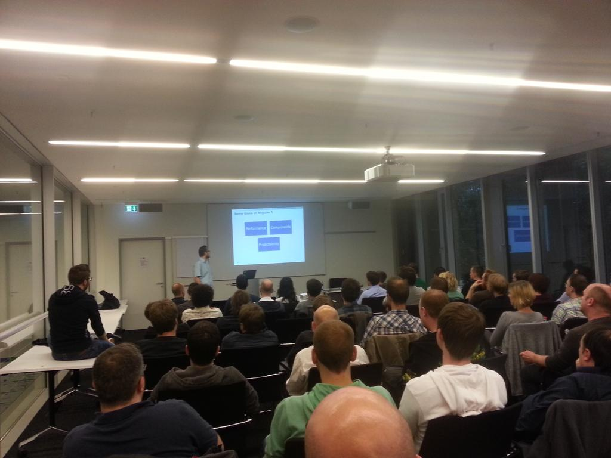

This group is community built around Angular. It started as a place to meet Angular enthusiasts offline, but has since grown in a fully-fledged meetup.
We've been active on Meetup.com since February 2014, and, apart from a short break during the Covid pandemic, have met regularly several times a year.

We've had awesome speakers from around the world, as well as great people local to Munich.
Currently our list of meetups is on the Meetup.com, until we migrate our archives to our (as of April 2022) dashing new website.